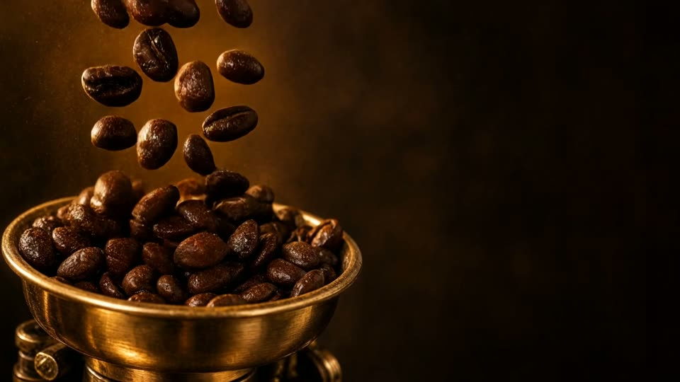

Origin and roast
Beans that travelled the frankincense road.
Natural and washed lots from the highlands of Yemen and Ethiopia, roasted in small batches in Muscat every week. Medium for espresso, light for kahwa, never more than fourteen days off roast.